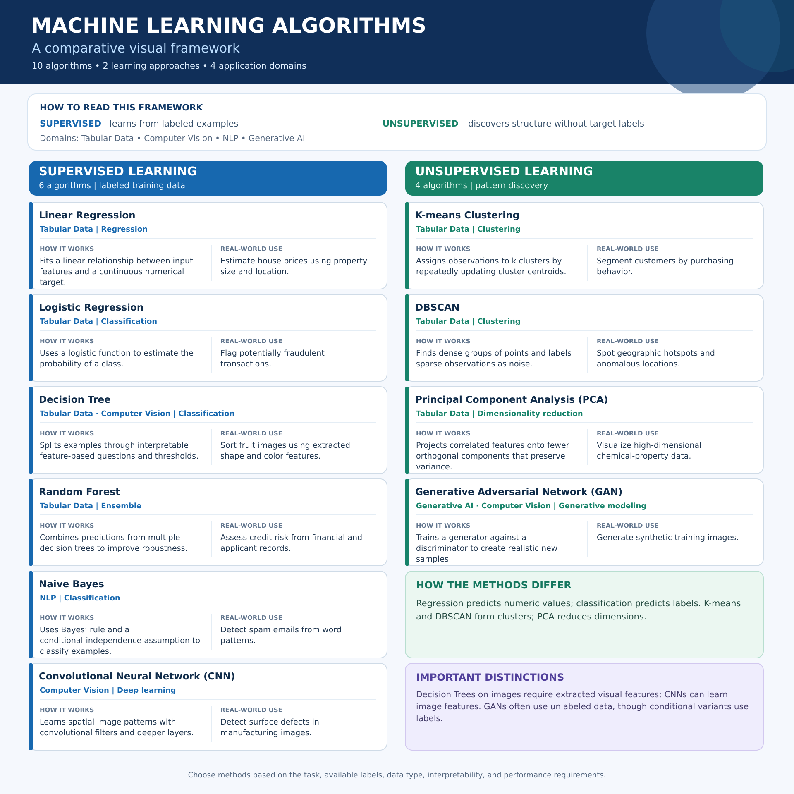
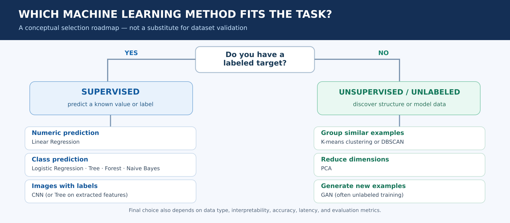

Linear Regression
RegressionHOW IT WORKS
Fits a linear relationship between input features and a continuous numerical target.
REAL-WORLD USE
Estimate house prices using property size and location.
A comparative visual framework of 10 algorithms: learning type, where they apply, how they work, and the real problems they solve.
Choose a learning approach by asking whether a desired outcome is provided in labeled examples.
Uses labeled examples to learn a mapping from inputs to a known output, such as a numeric value or a category.
Examples:Regression, classification, and labeled image recognition.
Finds structure in unlabeled data, including groups and low-dimensional representations.
Examples:Clustering, dimensionality reduction, and some generative modeling.
Classification note: GANs commonly learn from unlabeled examples, but conditional GANs can use labels. They are included with unsupervised methods here to match the assignment’s two-column framework; generative modeling is not exclusively an unsupervised-learning category.
Explore what each method does. Filter by learning type and application domain; every card includes a concrete use case.
HOW IT WORKS
Fits a linear relationship between input features and a continuous numerical target.
REAL-WORLD USE
Estimate house prices using property size and location.
HOW IT WORKS
Uses a logistic function to estimate the probability of a class.
REAL-WORLD USE
Flag potentially fraudulent transactions.
HOW IT WORKS
Splits examples through interpretable feature-based questions and thresholds.
REAL-WORLD USE
Sort fruit images using extracted shape and color features.
HOW IT WORKS
Combines predictions from multiple decision trees to improve robustness.
REAL-WORLD USE
Assess credit risk from financial and applicant records.
HOW IT WORKS
Uses Bayes’ rule and a conditional-independence assumption to classify examples.
REAL-WORLD USE
Detect spam emails from word patterns.
HOW IT WORKS
Learns spatial image patterns with convolutional filters and deeper layers.
REAL-WORLD USE
Detect surface defects in manufacturing images.
HOW IT WORKS
Assigns observations to k clusters by repeatedly updating cluster centroids.
REAL-WORLD USE
Segment customers by purchasing behavior.
HOW IT WORKS
Finds dense groups of points and labels sparse observations as noise.
REAL-WORLD USE
Spot geographic hotspots and anomalous locations.
HOW IT WORKS
Projects correlated features onto fewer orthogonal components that preserve variance.
REAL-WORLD USE
Visualize high-dimensional chemical-property data.
HOW IT WORKS
Trains a generator against a discriminator to create realistic new samples.
REAL-WORLD USE
Generate synthetic training images.
The main infographic satisfies the assignment criteria; the second diagram clarifies how to choose among methods.


Creating this visual comparison helped me distinguish learning paradigms from algorithm functions. I initially thought of classification, clustering, and deep learning as parallel categories, but the exercise clarified that a method's training approach, task, and data domain describe different aspects of its design.
I learned that supervised methods use known targets, while unsupervised techniques discover patterns without target labels. Importantly, K-means and DBSCAN both cluster observations but make different assumptions about cluster structure, while PCA reduces dimensions rather than assigning groups. CNNs learn representations from images, and GANs generate new samples through adversarial training.
As someone interested in scientific computing, I can connect these distinctions to chemical-property prediction, image analysis, molecular data exploration, and synthetic data generation. My main takeaway is that selecting a machine-learning algorithm should begin with the research question, the available data and labels, and the required trade-offs in accuracy and interpretability.
General descriptions are educational summaries, not results from models trained for this assignment.